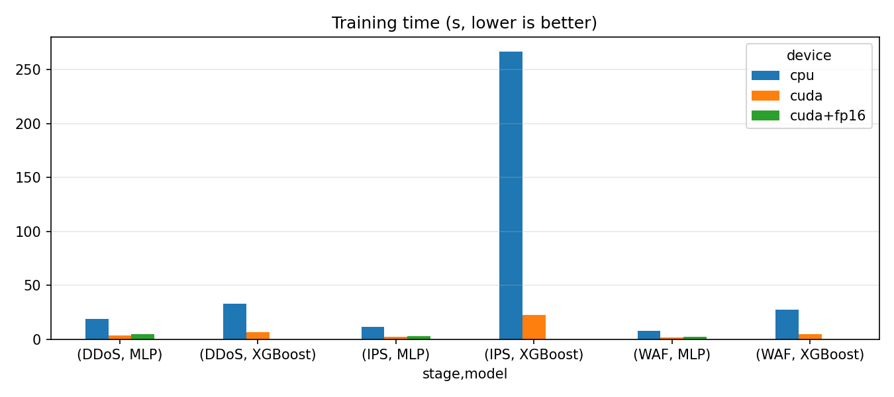
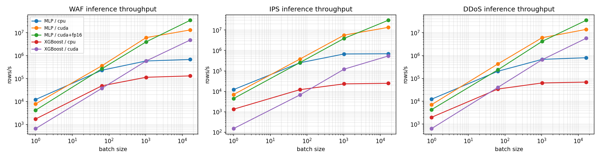

security-ai-lab › CPU vs GPU 성능 비교
CPU vs GPU 성능 비교 — 보안 탐지 모델 (WAF · IPS · DDoS)
앞 단계의 탐지 모델 구조(XGBoost, MLP)를 같은 데이터·같은 하이퍼파라미터로 CPU와 GPU에서 학습·추론해, 어떤 운영 조건에서 GPU가 필요한지를 수치로 판단했습니다.
학습 시간 단축 (IPS · XGBoost)267s → 22s12.0배
단건(batch=1) 추론CPU 우세GPU는 CPU 대비 0.11~0.64배 처리량
대량 배치(16,384) 처리량최대 83배DDoS · XGBoost GPU
목표 트래픽 기준 필요 자원CPU 서버 1대추론만 보면 GPU 불필요
1. 실험 환경
| 항목 | 값 |
|---|---|
| GPU | Tesla T4 (14.6 GB), Driver 580.82.07, CUDA 13.0, cuDNN 92800 |
| CPU | Intel(R) Xeon(R) CPU @ 2.00GHz — vCPU 2개, RAM 12.7 GB |
| 라이브러리 | PyTorch 2.14.1+cu130, XGBoost 3.4.1, scikit-learn 1.6.1, Python 3.13.16 |
| 데이터 | 단계별 규모를 맞춘 합성 데이터 — WAF 20만×64, IPS 30만×80(5클래스), DDoS 50만×40 |
비교 방법
- XGBoost:
device="cpu"vsdevice="cuda"(tree_method="hist", 트리 300개, 깊이 8) - MLP(256→128): CPU FP32 vs CUDA FP32 vs CUDA FP16(AMP)
- GPU 연산은 비동기이므로 측정 전후
torch.cuda.synchronize(), 워밍업 후 반복 측정의 중앙값 사용 - GPU 추론 입력은 cupy/텐서로 GPU 메모리에 올려 CPU↔GPU 복사 비용을 제외
- 지표: 학습 시간, macro F1, 배치 크기(1 / 64 / 1,024 / 16,384)별 처리량, 단건 지연 p50·p99
2. 학습 시간 — GPU가 일관되게 빠름
| 단계 | 모델 | CPU (s) | GPU (s) | 배율 | F1 (CPU / GPU) |
|---|---|---|---|---|---|
| WAF | XGBoost | 27.6 | 4.8 | 5.7× | 0.959 / 0.959 |
| WAF | MLP | 8.0 | 1.8 | 4.5× | 0.979 / 0.979 |
| IPS | XGBoost | 267.0 | 22.3 | 12.0× | 0.947 / 0.947 |
| IPS | MLP | 11.6 | 2.0 | 5.9× | 0.983 / 0.983 |
| DDoS | XGBoost | 32.6 | 6.5 | 5.0× | 0.963 / 0.963 |
| DDoS | MLP | 18.6 | 3.2 | 5.8× | 0.982 / 0.982 |

IPS(5클래스) XGBoost에서 차이가 가장 큽니다. 다중 분류는 클래스 수만큼 트리를 만들어 연산량이 늘어나기 때문입니다.
XGBoost의 F1은 CPU와 GPU가 같아서 장치를 바꿔도 탐지 품질은 유지됩니다.
3. 추론 — 배치 크기에 따라 결과가 뒤집힘
CPU 대비 GPU 처리량 배율 (1 미만 = GPU가 더 느림)
| 단계 | 모델 | GPU | batch 1 | batch 64 | batch 1,024 | batch 16,384 |
|---|---|---|---|---|---|---|
| WAF | XGBoost | cuda | 0.38× | 0.78× | 5.11× | 36.70× |
| WAF | MLP | cuda | 0.64× | 1.57× | 10.40× | 19.35× |
| WAF | MLP | cuda+fp16 | 0.34× | 1.16× | 6.77× | 51.05× |
| IPS | XGBoost | cuda | 0.11× | 0.55× | 5.23× | 21.58× |
| IPS | MLP | cuda | 0.57× | 1.52× | 8.35× | 19.45× |
| IPS | MLP | cuda+fp16 | 0.37× | 1.02× | 5.76× | 43.37× |
| DDoS | XGBoost | cuda | 0.32× | 1.18× | 10.39× | 83.01× |
| DDoS | MLP | cuda | 0.57× | 2.09× | 8.89× | 17.37× |
| DDoS | MLP | cuda+fp16 | 0.35× | 1.16× | 6.13× | 43.52× |

단건 지연 시간 (p50 / p99, ms)
| 단계 | 모델 | CPU | GPU |
|---|---|---|---|
| WAF | XGBoost | 0.371 / 0.563 | 1.503 / 2.087 |
| WAF | MLP | 0.088 / 0.180 | 0.151 / 0.238 |
| IPS | XGBoost | 0.727 / 1.450 | 5.645 / 6.521 |
| IPS | MLP | 0.081 / 0.154 | 0.152 / 0.246 |
| DDoS | XGBoost | 0.362 / 0.536 | 1.470 / 1.763 |
| DDoS | MLP | 0.088 / 0.153 | 0.153 / 0.246 |
작은 배치: CPU 우세
요청 1건을 처리할 때는 데이터 전송과 커널 실행 오버헤드가 연산 시간보다 큽니다. 그래서 GPU가 CPU보다 느립니다.큰 배치: GPU 압도
CPU(MLP)는 약 0.8M건/s에서 포화되지만, GPU는 배치가 커질수록 계속 늘어납니다. DDoS XGBoost는 83배까지 차이가 납니다.FP16은 조건부
batch 16,384에서 최대 35M건/s로 FP32의 2배 이상입니다(Tensor 코어). 하지만 작은 모델·작은 배치에서는 형 변환 비용 때문에 오히려 느립니다.4. 용량 산정
목표 트래픽(WAF 5천, IPS 5만, DDoS 20만 건/s), 마이크로배치 1,024, 최대 사용률 70% 기준입니다.
| 단계 | 모델 | 장치 | 목표 (건/s) | 1대 처리량 (건/s) | 근거 | 필요 대수 | 예상 사용률 |
|---|---|---|---|---|---|---|---|
| DDoS | MLP | cpu | 200,000 | 7,584,297 | 환산(효율 70%) | 1 | 2.64% |
| DDoS | MLP | cuda | 200,000 | 6,021,652 | 실측 | 1 | 3.32% |
| DDoS | XGBoost | cpu | 200,000 | 704,538 | 환산(효율 70%) | 1 | 28.39% |
| DDoS | XGBoost | cuda | 200,000 | 653,800 | 실측 | 1 | 30.59% |
| IPS | MLP | cpu | 50,000 | 7,531,083 | 환산(효율 70%) | 1 | 0.66% |
| IPS | MLP | cuda | 50,000 | 5,614,928 | 실측 | 1 | 0.89% |
| IPS | XGBoost | cpu | 50,000 | 259,561 | 환산(효율 70%) | 1 | 19.26% |
| IPS | XGBoost | cuda | 50,000 | 121,269 | 실측 | 1 | 41.23% |
| WAF | MLP | cpu | 5,000 | 6,521,125 | 환산(효율 70%) | 1 | 0.08% |
| WAF | MLP | cuda | 5,000 | 6,055,947 | 실측 | 1 | 0.08% |
| WAF | XGBoost | cpu | 5,000 | 1,272,868 | 환산(효율 70%) | 1 | 0.39% |
| WAF | XGBoost | cuda | 5,000 | 580,397 | 실측 | 1 | 0.86% |
CPU 처리량은 Colab vCPU 2개에서 잰 값을 32코어 서버로 환산한 추정치입니다(코어당 처리량 × 32 × 확장 효율 70%).
GPU는 T4 1장 실측치입니다. 측정 범위는 모델 연산만이며, 로그 파싱·특징 추출 시간은 포함하지 않습니다.
5. 운영 결론
| 구간 | 판단 기준 | 권장 | 근거 |
|---|---|---|---|
| WAF 인라인 차단 | 단건 지연 (p99) | CPU | 요청마다 즉시 판정해야 함. MLP CPU p50 0.09ms vs GPU 0.15ms |
| IPS · DDoS 플로우 분석 | 대량 배치 처리량 | 트래픽 규모에 따라 | 목표 트래픽에서는 CPU 서버 1대로 충분(사용률 최대 약 28%). 수백만 건/s 규모가 되어야 GPU가 의미 있음 |
| 모델 재학습 | 학습 시간 | GPU | 4~12배 단축. 신규 공격 패턴 반영 주기를 줄이는 데 GPU 투자가 정당화됨 |
정리하면, 추론은 CPU 서버에 두고 GPU는 재학습 전용으로 분리하는 구성이 이 규모에서 비용 대비 가장 합리적입니다.
6. 한계와 다음 단계
- 합성 데이터로 측정했으므로 F1은 탐지 성능이 아니라 CPU/GPU 결과가 같은지 확인하는 용도입니다. 다음에는 앞 단계의 실제 특징 데이터로 다시 측정할 예정입니다.
- CPU 서버 수치는 환산값입니다. 실제 서버(Rocky Linux 9)에서 측정하면 실측값으로 바꿀 수 있습니다.
- 엔드투엔드(로그 수집 → 특징 추출 → 추론) 지연은 서비스 구축 단계에서 측정할 예정입니다.